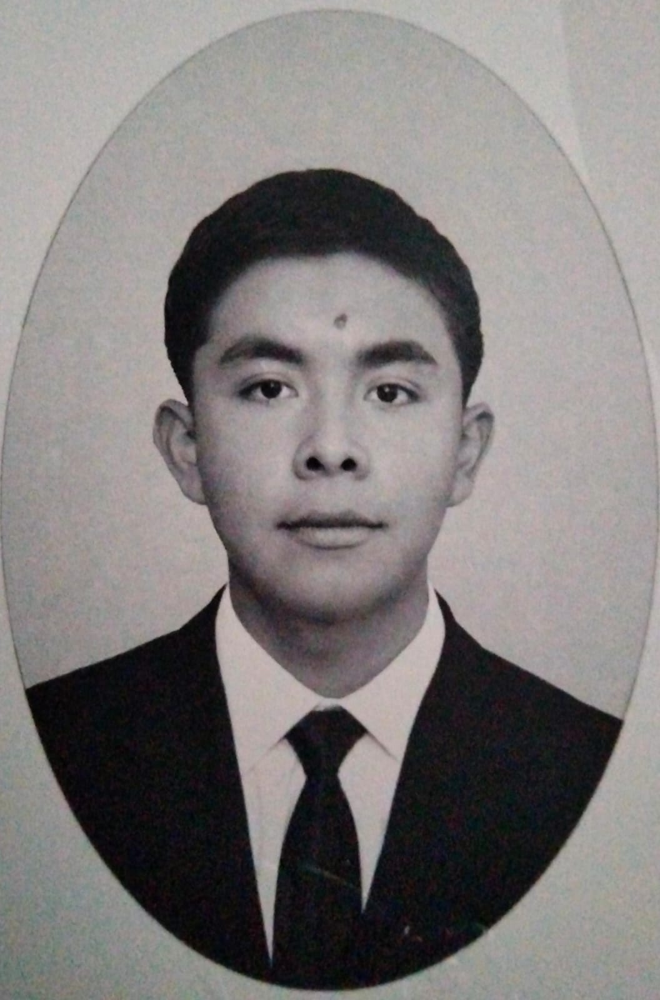

Bienvenidos a este espacio, donde conocerán más sobre mí:
Busco fortalecer mis habilidades en la lógica de programación orientada a objetos y poder demostrar capacidad para resolver problemas técnicos complejos, aprender tecnologías y trabajar con estándares de calidad.
Estudiante de Ingeniería Industrial y de Sistemas interesado en la optimización de procesos operativos y soluciones tecnológicas. Capaz de analizar flujos de trabajo y diseñar sistemas que reducen costos y elevan la productividad. Con un fuerte interés en la gestión de proyectos, busco aplicar mis conocimientos en mejora continua y coordinación de recursos para asegurar entregas eficientes y aportar valor al equipo.
Primer Lugar en Certamen de Innovación Ambiental (Fase Estatal) | [2023 y 2024] Premio Estatal “Reto H2O (2023)” y “Juvenil del Agua (2024)”.
Participación Destacada en Convocatorias Gubernamentales (JuventudesGto, Hack AI-DMF, Biolimpiadas, Espacio Acuoso, IdeaGTO, GIE/Gobierno de Guanajuato) | [2022 - 2025].